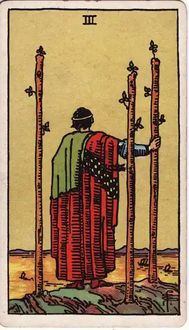
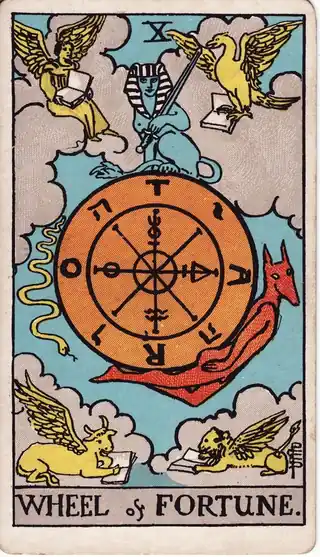
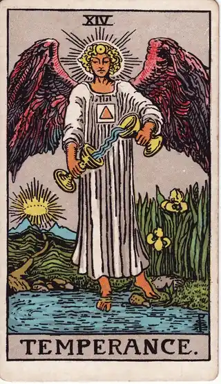

READING
When you're torn over whether to keep your current job. How to read a plateau in your career
· DECIDE. editors

There is no decisive complaint about your current workplace. You have learned to handle the work, and the people around you rate you reasonably well. And yet, when you picture yourself in three or five years, you feel the ground waver under your feet — "is it all right to stay in the same place like this?" Are you spending time in a period like that?
Let me say this first: the goal of this article is not to reach a conclusion about "whether you should change jobs." The goal is to know the true nature of your own "thirst" — neither anxiously browsing job sites, nor stopping thinking and burying yourself in the work in front of you. Once you know its true nature, you can see whether what needs to change is the place, or the way you engage with it.
POINT 01 Should what changes be the "place" or the "way you engage"?
When your current job starts to feel insufficient, the causes divide broadly into two. One is the case where the environment itself does not fit — the content of the work, how you are evaluated, the direction of the company. The other is the case where the environment is not bad, but your "way of working and engaging within it" has become fixed. You want discretion, but no one lets you take it on. You want to try new things, but only stable roles come around to you.
If you mistake one of these for the other, the cost is large. If what was really a problem of how you engage is treated by changing the place, you may repeat the same dissatisfaction at a new workplace. Conversely, if it is a problem of the environment and you keep enduring it, time simply passes. So before you start moving, you first need to put into words "where is my thirst coming from?"
The true nature of the thirst appears not in big events, but in small everyday moments of discomfort. The moment you felt "another meeting just like that one." Or, in reverse, the content of the work you could lose yourself in and forget the time. As you gather fragments like these, what you are truly hungry for begins to take shape.
What you want to watch for is the two extremes people tend to fall into in this period. Anxiously browsing job sites and moving on momentum. Or stopping thinking altogether and burying yourself in the work in front of you to get through it. Both are reactions for averting your eyes from "the feeling of the ground wavering," and the true nature of the thirst stays unknown. This period, which looks like standing still, is actually the best timing for careful observation. Precisely because you are at your current workplace, both the response you get and the discomfort you feel can be gathered as raw material from the field.
POINT 02 What the cards help you see

Three of Wands shows a figure looking out over ships setting sail from the top of a hill. It stands for a state of looking ahead to the next development, on the foundation of the ships you have already sent out — in other words, the career you have built so far. "What can I see ahead, on the extension of where I am now?" Before anxiously coming down from the hill, you first take in the whole view. This card gives you a perspective that does not throw your accumulation away, but looks at the future from on top of it.

Wheel of Fortune shows a great wheel that keeps turning, and stands for "turning points" and "how things come around." In a career, there are flows that your own effort alone cannot move. A change in company policy, a shift in the industry, an unexpected offer or transfer. Is your current sense of stagnation your own problem, or is it just a period when the flow has stopped? This card turns impatience into "judging what is worth waiting for."

Temperance shows an angel pouring water between two cups. It stands for not swinging to an extreme, but taking balance while adjusting the proportions. Before driving yourself into the binary of "keep going, or quit," you rearrange, little by little, the proportions of your current work and your time for learning, side work and rest. It is a perspective for designing the options in between. The answer is not always only black or white.
POINT 03 Build up everyday discomfort in a log, and make it material for your decision
A big decision like a career is exactly the kind you should not answer in a single day. What I recommend is building up small everyday discomfort and response in a decision log. On a day when work left you uneasy, one line about why. On a day when you felt a sense of purpose, one line about what was fulfilled. That alone is enough.
Once a few weeks have built up, look back. "What stresses me most is having no discretion." "On days when the work is building a new system, I am always positive." A single feeling may be a whim, but an accumulated record surfaces as a fact you cannot dismiss as imagination. The true nature of the thirst is usually written there.
Keeping a record is also an investment in your future self. When, half a year later, you are torn again over "should I stay?", your past self's record becomes your ruler. What were you torn about last time, and what did you see? Instead of being torn again from zero, you can think from where you left off. That becomes the foundation for a next move without regret. I also sorted out how to think about changing jobs at an older age in the article on being torn over changing jobs in your 30s.
POINT 04 Questions to ask yourself
Finally, in a quiet moment, try asking yourself these questions. Would your current dissatisfaction really disappear if you changed the place? In the last few weeks, what scene left you most uneasy? Conversely, what work made you forget the time? If you could rearrange the proportions of your current job just a little, what would you increase, and what would you decrease? And so that the self of one year from now can tell you "that was a good judgment," what should you know now?
A plateau in your career is not stagnation. It is a place for looking ahead to what comes next. There is no need to hurry. But do keep the view you took in properly in a record. That is what will make your next move a solid one.
Related decision guides
Cards related to this article


More reading
- The types of free tarot readings and how they differ — where the "that feels spot-on" feeling comes from, and how to use them for a decision
- When you're torn over whether to keep going or quit. Standards for letting go of attachment
- Why I, who don't believe in fortune-telling, made tarot into a decision-making tool
- Why the more you ask for advice, the less you can decide, and how to get your own voice back
- What changes in deciding when you stop searching for the right answer